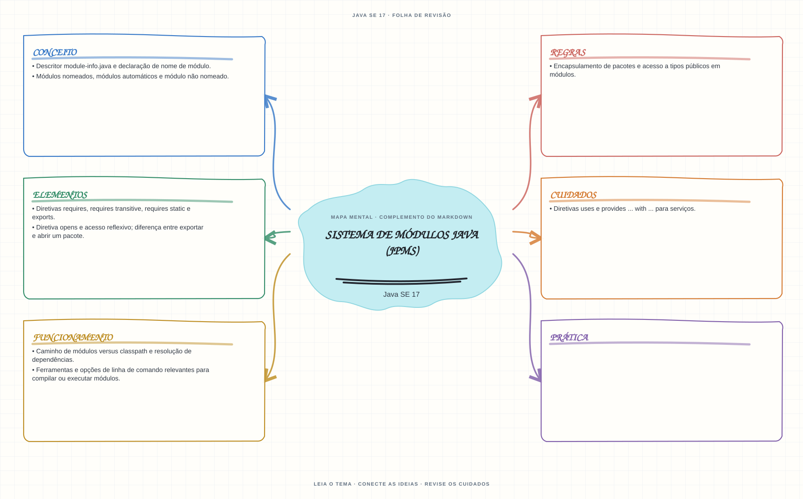

Ver mapa mental deste assuntoDeclarar dependências e distinguir exposição de API pública de abertura para reflexão.
Aprofundamento e revisão 1Z0-829: use esta página depois dos fundamentos. Os tópicos de prova complementam a trilha inicial e não são pré-requisitos para começar a programar.
Aprofundamento opcional: experimente este assunto depois de compilar classes Java comuns; a prática modular usa diretórios e comandos de compilação próprios.
- Leia o objetivo e localize a ideia principal no conteúdo abaixo.
- Preveja o resultado, compile e execute o exemplo.
- Faça a atividade sem copiar a solução e confira a checagem comentada.
EXEMPLO DE CONSOLE
Veja a regra em execução
Antes de executar, anote sua previsão. Compile o exemplo com o JDK e compare a saída observada com as regras deste assunto.
Comandos para compilar e executar
javac -d target/bin src/07-modulos-java/sistema-de-modulos-jpms/SistemaDeModulosJpmsExample.java
java -cp target/bin SistemaDeModulosJpmsExampleA execução imprime o resultado no console para você comparar com sua previsão.
Consultar código-fonte: SistemaDeModulosJpmsExample.java
import java.sql.Connection;
public class SistemaDeModulosJpmsExample {
public static void main(String[] args) {
System.out.println("=== Java Platform Module System (JPMS) ===");
Module moduloBase = String.class.getModule();
Module moduloSql = Connection.class.getModule();
System.out.println("Modulo da classe String: " + moduloBase.getName());
System.out.println("Modulo da interface java.sql.Connection: " + moduloSql.getName());
String descritor = """
module estudos.ocjp {
requires java.sql;
exports estudos.ocjp.api;
opens estudos.ocjp.modelo to framework.reflexivo;
uses estudos.ocjp.spi.ProvedorRelatorio;
provides estudos.ocjp.spi.ProvedorRelatorio
with estudos.ocjp.impl.ProvedorCsv;
}
""";
System.out.println("Descritor conceitual module-info.java:");
System.out.println(descritor);
System.out.println("requires declara dependencia; exports permite acesso normal a um pacote.");
System.out.println("opens permite acesso reflexivo; uses/provides declaram uso e implementacao de servicos.");
System.out.println("O texto ilustra diretivas: os nomes sao exemplos, nao um modulo pronto para compilar.");
}
}
PRATIQUE AGORA
Faça uma pequena alteração por conta própria
Escreva um module-info.java mínimo com uma dependência requires e um pacote exposto por exports.
Concluído quando: o programa compilar, produzir o resultado esperado e você conseguir explicar a regra aplicada.
CHECAGEM RÁPIDA · Sistema de módulos Java (JPMS)
Qual é a diferença entre exports e opens?
Conferir resposta comentada
exports torna acessíveis tipos públicos de um pacote; opens permite acesso reflexivo profundo ao pacote conforme as regras do sistema de módulos.
Estude
- Descritor
module-info.javae declaração de nome de módulo. - Diretivas
requires,requires transitive,requires staticeexports. - Diretiva
opense acesso reflexivo; diferença entre exportar e abrir um pacote. - Diretivas
useseprovides ... with ...para serviços. - Módulos nomeados, módulos automáticos e módulo não nomeado.
- Caminho de módulos versus classpath e resolução de dependências.
- Encapsulamento de pacotes e acesso a tipos públicos em módulos.
- Ferramentas e opções de linha de comando relevantes para compilar ou executar módulos.
Prática
Desenhe dois módulos com dependência explícita e um serviço. Identifique quais pacotes podem ser acessados e quais diretivas faltam.
Como este capítulo se relaciona com cada exame
JPMS foi introduzido após Java 8; não aplique este capítulo como conteúdo Java 8.
Base de estudo deste portal; confirme o mapeamento com o blueprint vigente.
Conceitos úteis; confira o objetivo e as regras de módulos da prova Java 21.
Orientação editorial sobre reaproveitamento do material; não representa objetivos oficiais nem garante cobertura do exame. Consulte o comparativo e as fontes da Oracle.